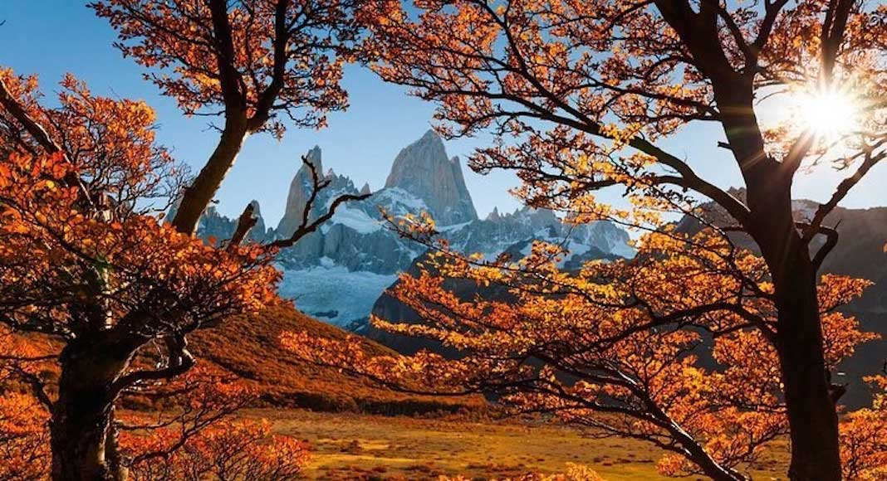
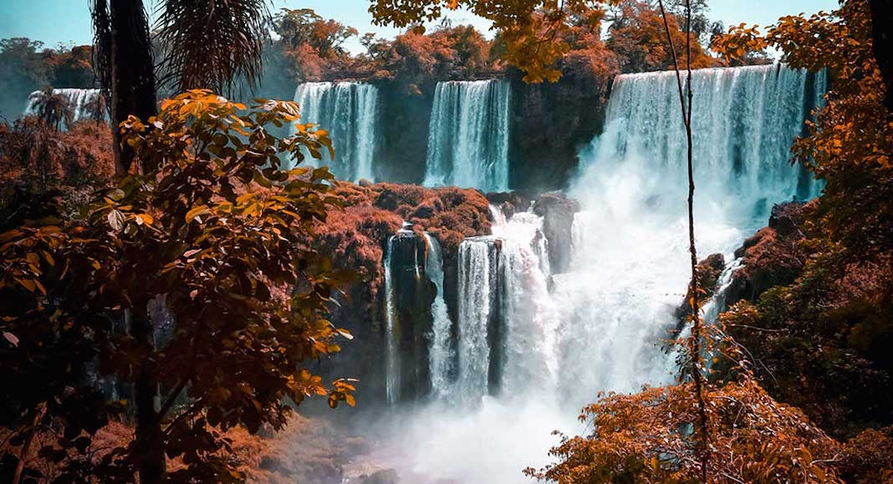
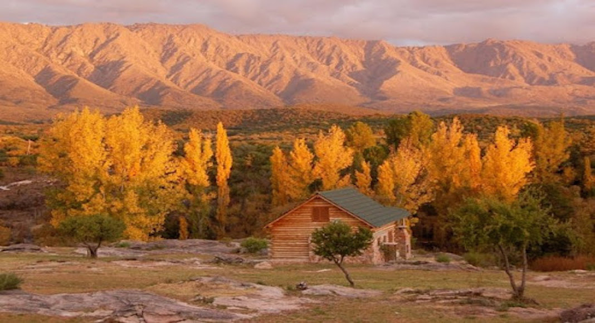
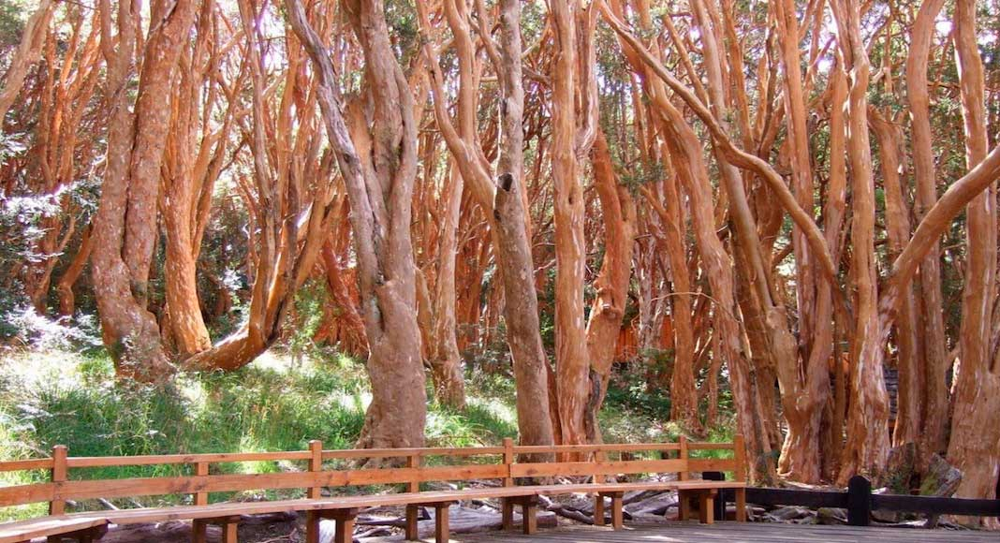

El Chaltén : es uno de los mejores destinos para disfrutar el otoño en Argentina ya que en esta estación adquiere un encanto especial gracias al contraste de sus colores en el paisaje: los bosques se convierten en un color rojizo intenso y las lengas y ñires cambian las tonalidades de sus hojas tiñendo todo el paisaje de ocre.

Cataratas del Iguazú: Si bien se pueden visitar durante todo el año, se recomienda viajar en otoño ya que en abril termina la temporada de lluvias y puede aprovecharse más el paseo. Durante el verano las temperaturas pueden ser muy elevadas (entre los 30 y 35 grados) y en cambio, en otoño, las tardes son más cálidas y agradables pudiendo disfrutar la zona caminando en las pasarelas y en los paseos sin el calor agobiante del verano.

Valle de Traslasierra: El Valle de Traslasierra está ubicado al oeste de la ciudad de Córdoba, limitado por diversos cordones serranos y bosques y se encuentra atravesado por numerosos ríos y arroyos, que se distinguen por sus aguas claras.Durante el otoño sus paisajes se vuelven más maravillosos ya que se tiñen de naranjas, ocres y amarillos.

Parque Nacional Los Arrayanes: El Parque Nacional Los Arrayanes se encuentra en la provincia de Neuquén y es un bosque de arrayanes lleno de plantas únicas y especies autóctonas.Un buen plan para disfrutar el otoño en todo su esplendor en este parque es recorrer sus senderos de madera y apreciar estas especies centenarias. Podrás descubrir de cerca que el arrayán (llamado “quetrihué” en lengua mapuche) es de color canela y tiene una corteza delgada que se cae y deja ver algunas manchas blancas debajo que convierte a este árbol en una especie única.